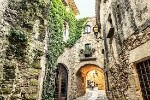
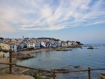
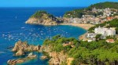

Here you can see the location and a video for additional information about Costa Brava!
A view from the top hill of Costa Brava.
This was taken on a bright sunny day in Costa Brava, it offers a great view of the clear waters and lovely coastline.
This is an image from inside the town, here you can see the unique structure of the houses.
This was taken from the walk-off area by the ocean. It offers a great view of all the boats and hills.
This was taken from one of the highest points of Costa Brava, here you can clearly see the whole town.